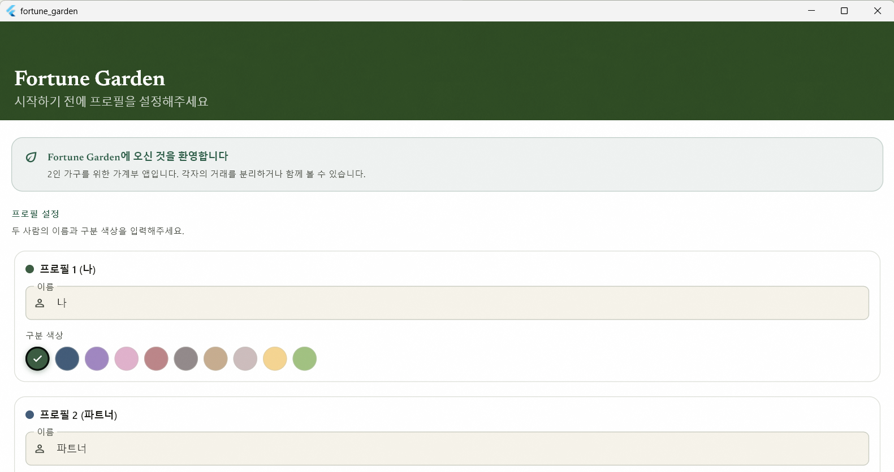
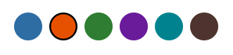
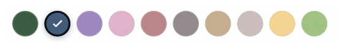

01. 작업 개요 및 점검
앱의 첫인상을 결정하는 초기 설정 화면의 완성도를 높이기 위해 누락된 가이드 섹션과 유효성 검사 로직을 보완했습니다.
| 항목 | 조치 내용 | 상태 |
|---|---|---|
| 웰컴 섹션 및 계좌 안내 | _InfoBanner 및 3단계 계좌 가이드 추가 |
✅ 완료 |
| 유효성 검사 | 실시간 errorText 표시 및 입력 시 즉시 해제 | ✅ 완료 |
| 활성 프로필 설정 | upsert 후 switchProfile(1) 호출 추가 |
✅ 완료 |
| 에러 핸들링 | 저장 실패 시 SnackBar 알림 처리 | ✅ 완료 |
02. 디자인 시스템 적용 상세

2.1. 레이아웃 및 헤더
전체 구조를 GrainOverlay와
CustomScrollView 조합으로 구성하여 다른 메인 화면들과
시각적 통일성을 부여했습니다.
// 화면 로컬 상수로 헤더 배경색 정의 static const _headerBgLight = Color(0xFF2D4A22); static const _headerBgDark = Color(0xFF051A0F); // FlexibleSpaceBar 타이틀 폰트 적용 Text('Fortune Garden', style: GoogleFonts.newsreader(fontSize: 20, fontWeight: FontWeight.w600))
2.2. 주요 UI 컴포넌트
-
_InfoBanner:
eco_outlined아이콘과 Primary 테마색을 활용한 안내 배너. - _ProfileCard: 10종의 커스텀 팔레트에서 프로필 색상을 선택할 수 있는 애니메이션 카드.
- _AccountGuide: 3단계(프로필 설정 → 계좌 추가 → CSV 가져오기) 가이드 카드 구현.
-
시작하기 버튼: 하단에 고정된 52px 높이의
FilledButton으로 세리프 폰트 적용.
03. 버그 수정 및 로직 개선
3.1. FlexibleSpaceBar Overflow 해결
자식 위젯의 총 높이가 제약(44px)을 초과하여 발생하던 RenderFlex 에러를 텍스트 크기 조정(22→20px) 및 padding 최적화를 통해 해결했습니다.
3.2. 초기 활성 프로필 ID 설정 이슈
프로필 생성 후 active_profile_id가 설정되지 않아 메인
화면으로 진입하지 못하고 루프되는 문제를
switchProfile(1) 명시 호출로 수정했습니다.
// 프로필 저장 완료 후 강제 활성화 await useCase.upsert(profile1); await useCase.upsert(profile2); await useCase.switchProfile(1); // 루프 방지 핵심 로직
04. 색상 팔레트 변천사 (v3)


디자인 시스템 v1.1에 맞춰 포레스트 그린, 로즈 모브 등 자연적이고 차분한 10종의 어스톤(Earth-tone) 팔레트를 최종 확정했습니다.
// 프로필 기본 색상 구성 Profile 1: #3A5A40 (포레스트 그린) Profile 2: #415A77 (스틸 블루)
05. 테스트 및 확인 방법
본 화면은 데이터가 없는 최초 실행 시에만 노출되므로, 재확인을 위해서는 다음 방법 중 하나를 권장합니다.
-
DB 초기화: 앱 데이터를 삭제하거나
.db파일을 삭제하여 초기 상태로 되돌립니다. -
강제 라우팅:
app_router.dart의initialLocation을/setup으로 임시 변경하고redirect로직을 주석 처리합니다.